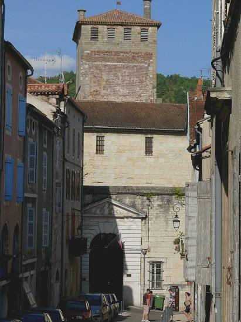
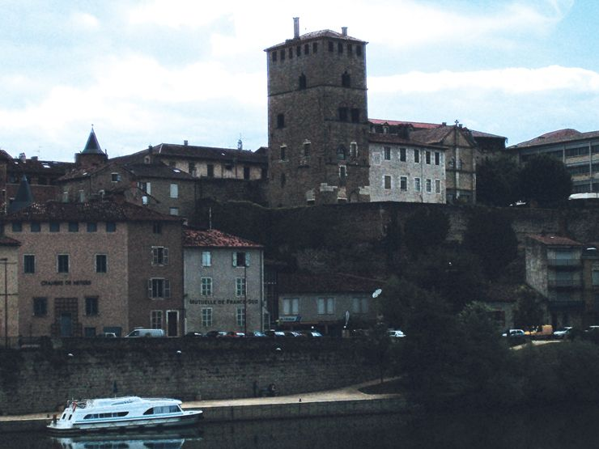
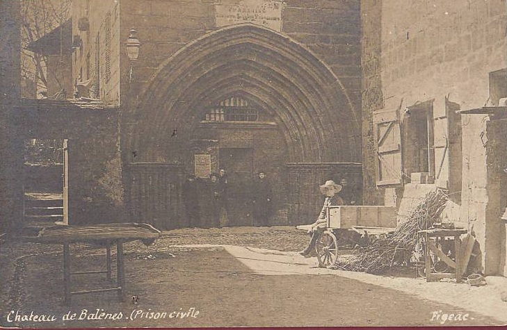
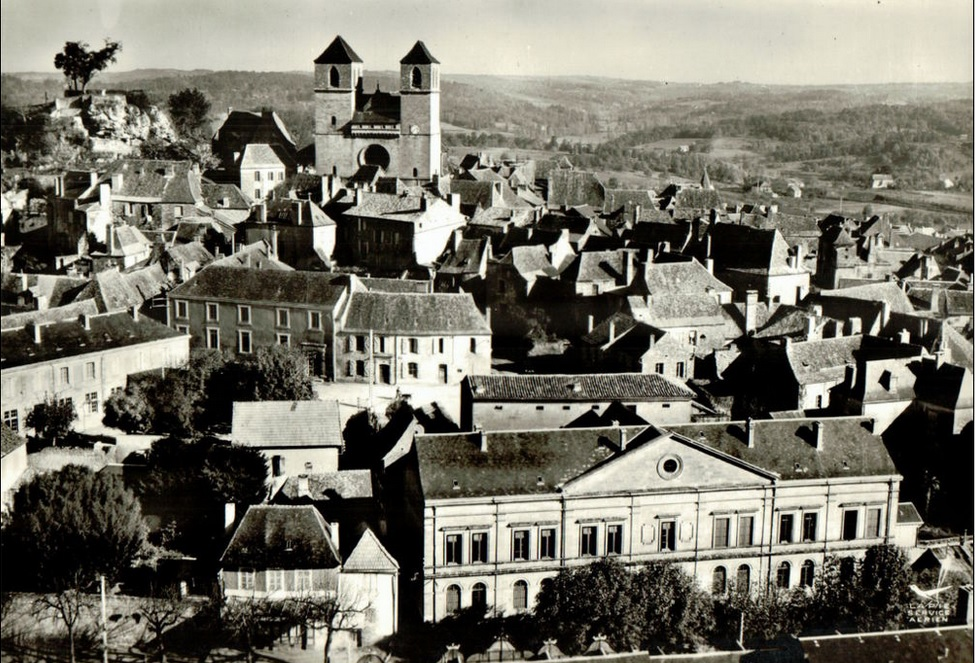

| Département | Images | Ville | Nom | Adresse | Période | Capacité | Histoire du lieu | Nombre d'exécutions |
| Lot (46) |   |
Cahors | Maison d'arrêt | 1, rue du Château du Roi | 1790-2012 | 40 places, 9 surveillants (1962) | Ancien palais de Via, classé monument historique. Environ 60 détenus. Fermée en juillet 2012, détenus transférés à Montauban. | Aucune exécution. |
| Lot (46) |  |
Figeac | Palais Balène | Impasse des prisons | 18??-19?? | Palais médiéval, l'endroit a connu bien des aventures : temple protestant pendant les guerres de religion, tribunal de la sénéchaussée, il devient à la fois tribunal civil et prison pour Figeac jusqu'en 1879. Désaffecté, il devient école, puis salle des fêtes à partir de 1900. Courant du XXe siècle, on lui trouve une nouvelle occupation : c'est désormais le foyer municipal, où l'on trouve un théâtre puis un cinéma. | Aucune exécution. | |
| Lot (46) | Figeac | Maison d'arrêt | 16, rue de l'abbé Debons | 1916-1926 | Après que le tribunal ait trouvé ses nouveaux bâtiments, non loin de là, on songe à doter Figeac d'une nouvelle prison : petite - sept cellules pour les hommes, cinq pour les femmes -, elle est construite à quelque distance du centre-ville. Le bâtiment est actuellement une résidence HLM. | Aucune exécution. | ||
| Lot (46) |  |
Gourdon | Maison d'arrêt | Rue Calmon | 18??-1926 | La petite prison, comme souvent, se trouvait tout à côté du palais de justice : ici, elle se cache derrière lui, dans une ruelle. On distingue bien les fenêtres minuscules des cellules sur la photo. | Aucune exécution. |
{kind=link}
{kind=link}
{kind=link}
{kind=link}